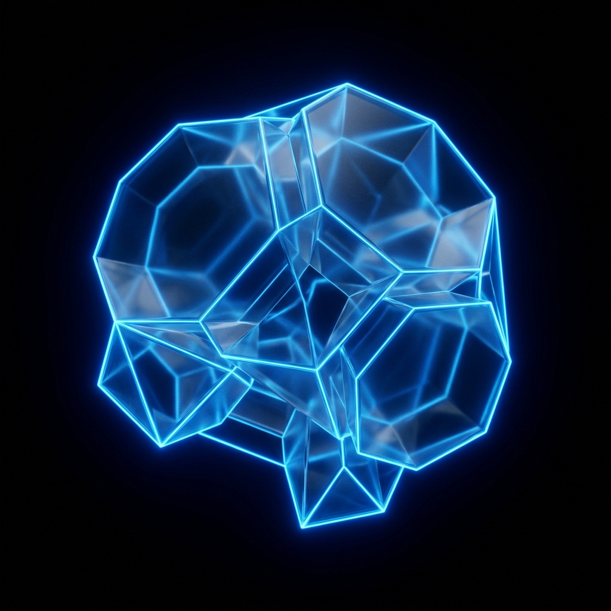
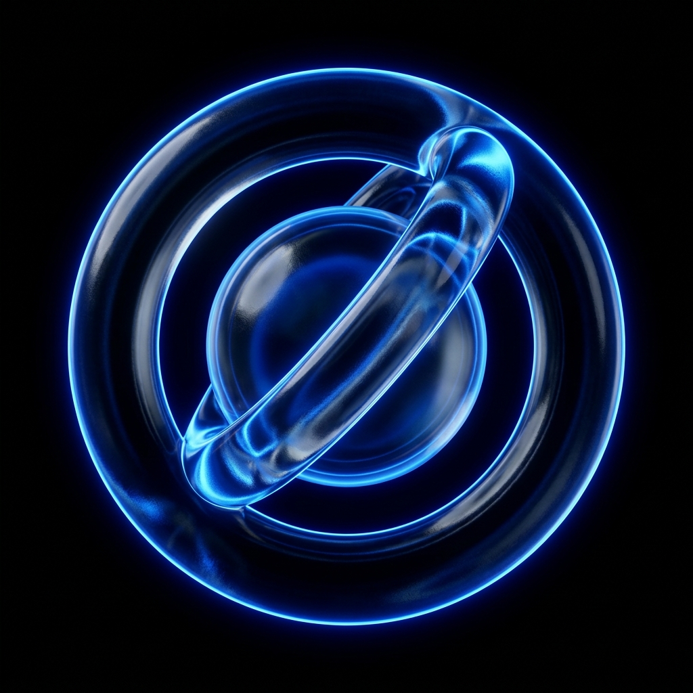
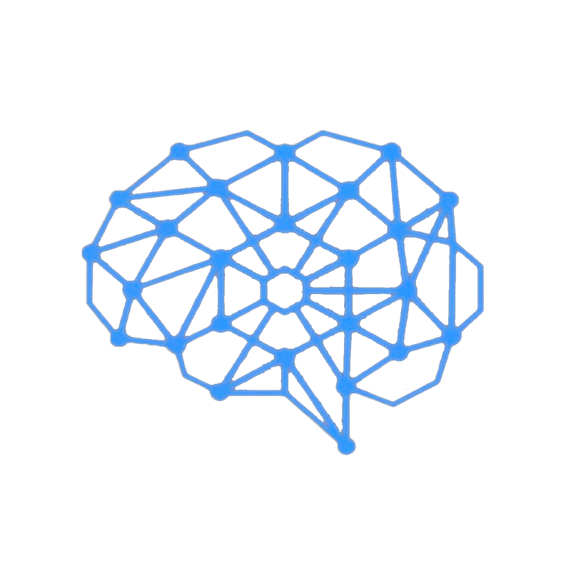

Работает на передовых нейросетях
Нейросеть в твоем
кармане.
Свободный ИИ-ассистент прямо в Telegram. Сверхбыстрые ответы, работа без VPN и цензуры. Общайся, пиши код, переводи статьи — ответит на всё, кроме нелегальщины.
Запустить бота в Telegram
Напиши игру «Змейка» на Python с интерфейсом.
Без проблем! Вот полностью готовый код игры «Змейка» с использованием библиотеки pygame...